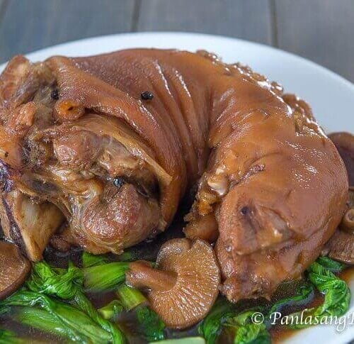

Patatim

Description:
Patatim is a traditional Filipino dish featuring a succulent braised pork leg or hock, simmered to tender perfection
in a flavorful sauce of soy sauce, star anise, and various aromatics.
Often accompanied by vegetables like bok choy or mushrooms, this rich and savory
dish is a staple in festive gatherings and special occasions, celebrated for its deep,
umami flavors and melt-in-your-mouth texture.
Ingredients:
- 1 whole pork leg or hock (about 3-4 pounds)
- 1/4 cup soy sauce
- 1/4 cup oyster sauce
- 1/4 cup sugar
- 1/4 cup rice wine or Shaoxing wine
- 1/4 cup dark soy sauce
- 1 onion, chopped
- 5 cloves garlic, minced
- 3-4 pieces star anise
- 1 cinnamon stick
- 1 thumb-sized piece of ginger, sliced
- 2-3 cups water or pork broth
- 2-3 tablespoons cooking oil
- Salt and pepper to taste
- 1 bundle bok choy or pechay, blanched (optional)
- 1 cup shiitake mushrooms, soaked and sliced (optional)
Steps:
- Prepare the Pork: Clean the pork leg thoroughly and pat dry. Rub with salt and pepper, then set aside.
- Sear the Pork: In a large pot or Dutch oven, heat the cooking oil over medium heat. Sear the pork leg on all sides until golden brown. Remove the pork from the pot and set aside.
- Sauté the Aromatics:In the same pot, sauté the onions, garlic, ginger, star anise, and cinnamon stick until fragrant.
- Add Sauces and Seasonings:Pour in the soy sauce, dark soy sauce, oyster sauce, sugar, and rice wine. Stir well to combine.
- Braise the Pork:Return the seared pork leg to the pot. Pour in enough water or pork broth to cover the pork. Bring to a boil, then reduce the heat to low. Cover and simmer for 2-3 hours, or until the pork is tender and the sauce has thickened. Occasionally turn the pork leg to ensure even cooking.
- Add VegetablesIf using, add the blanched bok choy and shiitake mushrooms to the pot during the last 10-15 minutes of cooking. Stir gently to combine.
- Adjust Seasoning:Taste the sauce and adjust the seasoning with additional soy sauce, salt, or sugar as needed.
- Serve:Transfer the tender pork leg to a serving platter. Pour the sauce and vegetables over the pork. Serve hot with steamed rice.